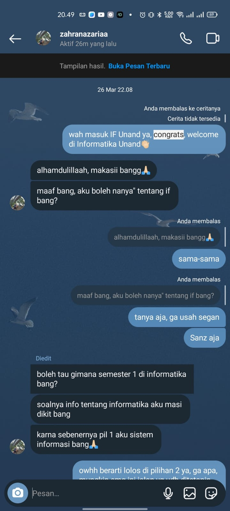

Di suatu sore yang rada ber awan, termenung seorang laki-laki yang bernama Vero, dia adalah seorang mahasiswa semester 2 jurusan Informatika Dia sedang belajar di kelas, terlihat jam menunjukkan pukul 3 sore pada hari senin 26 Maret 2024. Dia teringat kalau pada hari ini adalah hari diumumkannya peserta SMA yang lolos di jalur SNBP. Seketika dia terpikirkan seseorang, orang tersebut tidak lain dan tidak bukan adalah adik kelas nya yang dia tau sudah menempuh jalan pendidikan yang sama dengan nya sedari SD perempuan itu bernama Zahran Azaa dia terpikirkan apakah adik kelas nya itu juga akan menyusul dirinya di jurusan informatika ini, tetapi seketika dia langsung terpikirkan dan terbisik di pikirannya ga mungkin lah dia ke sini, pasti dia masuk jurusan kesehatan
. Tidak lama setelah dia memikirkan itu, jam pulang sudah datang. dia menancap gas mobil nya dan pergi pulang ke rumah. di rumah saat dia melihat WA, dia membuka story wa dari salah satu guru nya di SMA. Alangkah terkejutnya dia kala itu yang dia lihat adalah pengumuman dari adik kelas nya yg dia pikirkan tadi dan isi pengumuman nya adalah Selamat Zahran Azaria Anvaya Lulus di Jurusan Informatika UNAND
Di tempat lain, perempuan yang sedang dipikirkan oleh Vero ternyata sedang terharu dengan hasil yang dia dapatkan yaitu lulus SNBP meskipun dia lulus pada pilihan ke dua nya yaitu informatika, dikarenakan pilihan satu yang ia masukkan adalah jurusan Sistem Informasi. Entah suatu kebetulan atau memanglah garis takdir yang mempertemukan mereka. Diketahui juga pada tahun lalu ternyata Vero juga meletakkan jurusan Sistem Informasi pada SNBP nya tahun lalu.
Vero yang mengetahui kalau adek kelas nya tersebut ternyata juga masuk ke jurusan yang saat ini dia tempuh tiba tiba terpikirkan untuk mengucapkan selamat dan ucapan congratulation jika sang adek kelas membuat story pada instagram @zahranazariaa Diketahui adalah nama dari instragram sang adek kelas. terlihat hari sudah menunjukkan pukul 17.30 sore dan Vero belum melihat sang adek meng uploud Story bahwa dia lulus SNBP tak lama kemudia ternyata muncul la SG dari sang adek kelas, dia yang saat itu belum terpikirkan untuk menggunakan kata kata apapun ternyata kebingungan, dikarenakan dia dan sang adek belum pernah melakukan chattingan ataupun bertegur sapa pada saat selama mereka SD - SMP - SMA, dan pada pukul 22.08 WIB Vero pun memberanikan diri untuk mengucakan selamat pada story sang adek. tetapi setelah mengucapkan hal tersebut sang adek ternyata belum juga membalas pesannya. Vero pun terpikirkan, apa aku hapus saja ya pesannya, takut dikira sok asik
ternyata pada pukul 22.38 WIB sang adek membalas pesannya.
untuk dokumentasi awalan dari percakapan mereka dapat dillihat disini
